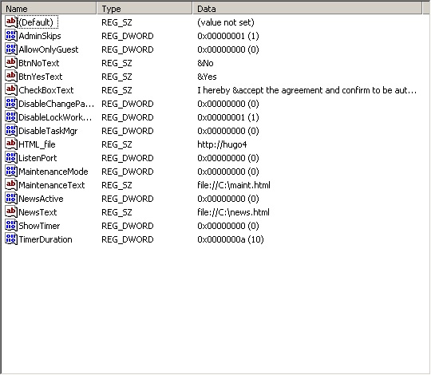

Meaning of the settings
The registry settings correspond to the options
in the configuration dialog. It follows a description of the valid settings in the registry
key of the GINA: HKEY_LOCAL_MACHINE\SOFTWARE\Microsoft\Windows NT\CurrentVersion\Winlogon\AgreementGINA.
The GINA will be notified as soon as you change some setting. In this case it
will immediately apply the new setting!
- AdminSkips (REG_DWORD):
Valid values are 0 (deactivated) and 1 (activated).
Sets whether the admin will be shown the agreement or the news. Default is: deactivated.
- AllowOnlyGuest (REG_DWORD):
Valid values are 0 (deactivated) and 1 (activated).
Limits the logon to admins and the specified account only. The specified account
is being logged on immediately. Logging off results in logging on that account once
more (except if overridden).
IMPORTANT: combining this mode with
a restriction for the "guest" account (such as "deny local logon") will result in
an infinite loop of reboots which can be interrupted by the override sequence F1.
Because it is stupid to put a certain account as guest and deny it to logon this
is an incompatibility which will not be removed in future!!!
- BtnNoText (REG_SZ):
Valid values: any text no longer than 15 characters (it should fit the button width).
Sets text of the "No" button in the the agreement dialog.
Note: you may use the & to create keyboard shortcuts to the buttons/checkbox.
Prepend the intended letter with the & just like this: &Yes gives Yes.
- BtnYesText (REG_SZ):
Valid values: any text no longer than 15 characters (it should fit the button width).
Sets text of the "Yes" button in the the agreement dialog.
Note: you may use the & to create keyboard shortcuts to the buttons/checkbox.
Prepend the intended letter with the & just like this: &Yes gives Yes.
- CheckBoxText (REG_SZ):
Valid values: any text no longer than 150 characters (it should fit the checkbox width).
Sets text of the checkbox in the the agreement dialog.
Note: you may use the & to create keyboard shortcuts to the buttons/checkbox.
Prepend the intended letter with the & just like this: &Yes gives Yes.
- DisableLockWorkstation (REG_DWORD):
Valid values are 0 (default behavior) and 1 (locking disabled).
See the more complete description.
- DisableChangePassword (REG_DWORD):
Valid values are 0 (default behavior) and 1 (locking disabled).
See the more complete description.
- DisableTaskMgr (REG_DWORD):
Valid values are 0 (default behavior) and 1 (locking disabled) or 2 (task manager replaced).
See the more complete description.
- HTML_file (REG_SZ):
Valid values: any URL (e.g. file://... or http://...) or HTML markup code.
Sets the agreement to show in the agreement dialog.
- ListenPort (REG_DWORD):
Valid values are 0 (disable this feature) to 65535.
This specifies the port on which user information should be returned, or to
deactivate this feature at all.
- MaintenanceMode (REG_DWORD):
Valid values are 0 (deactivated) and 1 (activated).
If enabled, the user will be shown a maintenance notice and denied to logon. Only
admins are allowed to logon then.
- MaintenanceText (REG_SZ):
Valid values: any URL (e.g. file://... or http://...) or HTML markup code.
Sets the agreement to show in the maintenance notice.
- NewsActive (REG_DWORD):
Valid values are 0 (deactivated) and 1 (activated).
If enabled, the user will see a notice with news or urgent information. Whatever
you like, actually.
- NewsText (REG_SZ):
Valid values: any URL (e.g. file://... or http://...) or HTML markup code.
Sets the agreement to show in the news notice.
- ReplacementTaskMgr (REG_SZ):
Valid values: a path to an existing executable file with the replacement for the task manager.
See the more complete description.
- ShowTimer (REG_DWORD):
Valid values are 0 (deactivated) and 1 (activated).
Activates or deactivates the timer being shown before the user is allowed to
proceed. If this is 1 and TimerDuration is 0 the agreement dialog will
not be shown.
- TimerDuration (REG_DWORD):
Valid values range from 0 to 3600. It is the timout period in seconds.
Sets the timeout duration. If this is 0 and ShowTimer is 1 the
agreement dialog will not be shown.
There are three more special values. These values are somewhat volatile. This means,
if you set them they will disappear from the aforementioned location. However, this
does not mean they are gone. It means they have been moved to a safer location:
the so called password-stash of the system. Special rights are required to access
this information, additionally it is being encrypted.
- GuestDomain (REG_SZ):
Valid values: valid domain name for the specified user account. This value is optional
as there may be no domain. Local accounts need not to supply the local computer name.
- GuestName (REG_SZ):
Valid values: valid user account name.
- GuestPassword (REG_SZ):
Valid values: valid password corresponding to the user account. There is one
limitation: the password MUST NOT be empty.
;Default settings for AgreementGINA2
Windows Registry Editor Version 5.00
[HKEY_LOCAL_MACHINE\SOFTWARE\Microsoft\Windows NT\CurrentVersion\Winlogon\AgreementGINA]
"AdminSkips"=dword:00000001
"AllowOnlyGuest"=dword:00000000
"BtnNoText"="&No"
"BtnYesText"="&Yes"
"CheckBoxText"=" I hereby &accept the agreement and confirm to be authorized! "
"DisableChangePassword"=dword:00000000
"DisableLockWorkstation"=dword:00000000
"DisableTaskMgr"=dword:00000002
"HTML_file"=""
"ListenPort"=dword:00000000
"MaintenanceMode"=dword:00000001
"MaintenanceText"="Freshly installed GINA"
"NewsActive"=dword:00000001
"NewsText"=""
"ReplacementTaskMgr"="SimpTaskman.exe"
"ShowTimer"=dword:00000001
"TimerDuration"=dword:00000000
Download the registry script with default settings (right-click + "Save as"). Save the file with extension ".reg".